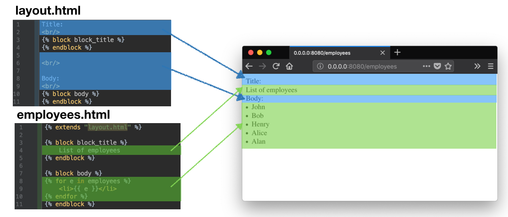

Chapter 2 - Templates
Creating Web templates.
I- Templates
A template is a file that can be used as a basis to generate files such as configuration files or source code files.
Flask uses Jinja2 as a template engine. The following code is an example of a Jinja2 template:
Jinja2 proposes two mechanisms to help developers to generate documents:
A- Expressions
Expressions are surrounded by {{ }} and are evaluated by Jinja. The expression is then replaced by its evaluation.
The following snippet show few example of expressions:
B- Statements
Statements enables to control the way Jinja generates the response, such as with:
B- Using templates
Create a templates folder: it will contain all the templates of the application. Copy the template from Section I-A in templates/employees.html.
Let's now generate a view that uses this template. To do so, implement a view as in the following snippet:
C- Reusing code from other templates
In the templates folder, create a templates/layout.html with the following code:.
Let's now generate a view that will use this template. To do so, implement a view as in the following snippet:
Now, modify the templates/employees.html, according to the following snippet:
You should get the following result:
